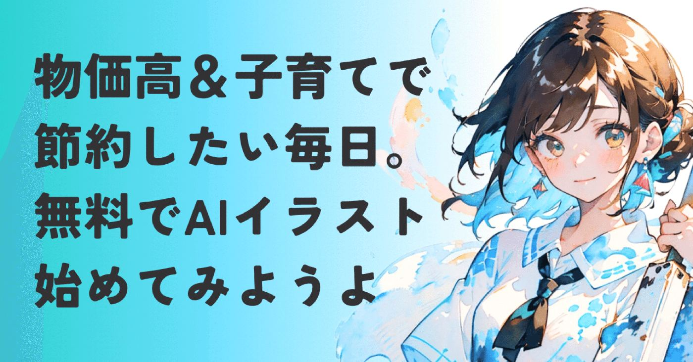
デザインもイラストも未経験！
でもAI課金はしたくない！
そんなAIイラスト初心者が「SeaArt」を
どう使い始めたのか、副業への繋げ方や
権利関係の失敗談まで書いてみました！
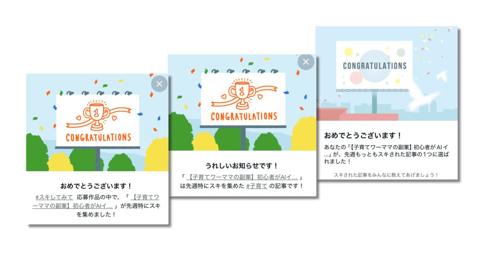
おはようございます。金田まりです。
私は元々イラストやデザインに憧れていて、
いつか仕事にしたいと考えていた人間。
でも何をどう描いたらいいか分からないし、
スキルの高い友達がたくさんいて諦めた苦い思い出。
しかしAIイラストに出会って6ヶ月。
私のnote運営は劇的に変わりました。
• フォロワー増
ビジネス記事の約5倍（1記事で100人以上）増えることも。
• 世界観の統一
「金田まりといえばこの絵」という信頼ベースができ、有料記事の成約率も向上。
• 副業の種
アイコン作成やストックフォトなど、
収益化の道筋が見えた。
といったメリットを享受してます。
しかもミルクのお湯を沸かしたり、保育園で玄関扉のロックを開けてもらったりと１分程度の隙間時間でイラストを生成。
その結果、文字では届かない潜在的な読者層にビジュアルという形で届くようになった。
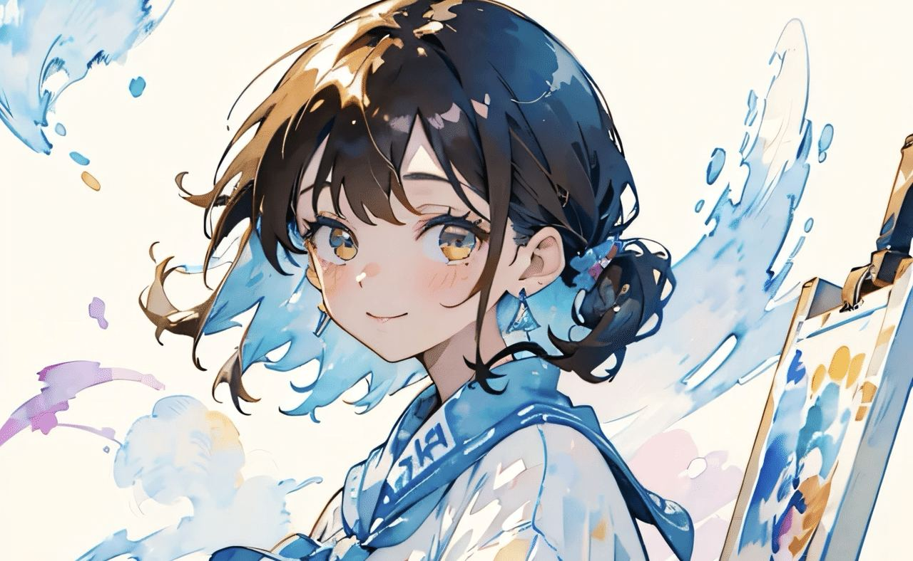
今回は
一からイラスト描くのは無理だけど、
自分らしい発信をしたい
という方へ、無料プランのSeaArtを使った
・具体的な手順
・学んだ失敗
・リスクを避ける方法
をまとめてみました。
目次で好きなところを読んでってくださいね▼
AIイラストが「あなたのブランド」を加速させる
なぜ私がAIイラストを推すのか。それは単に絵が描ける以上のリターンがあるからです。
① noteでのブランディング確立
統一感のあるイラストで発信を続けると、
この人の世界観、好きだな
と親しみを感じてファン化に繋がる。
結果としてスキもフォローも伸び、有料記事も手に取ってもらいやすくなる。
実践してみた最大のメリットです。
② 欲しいに応える副業への横展開
また、イラストそのもののコンテンツ展開も欠かせませんよね。
・アイコンやヘッダー作成
・イラストや素材の販売
・Kindle出版
・イラストをグッズ化して販売
noteの発信力をさらに磨いたら、この中のいずれかは挑戦してみたいなと妄想してます。
あと、シンプルに創作の喜びを味わえるのが
何より楽しい。
AIイラストから始まるスキルアップは、改めて可能性を広げてくれると実感します。
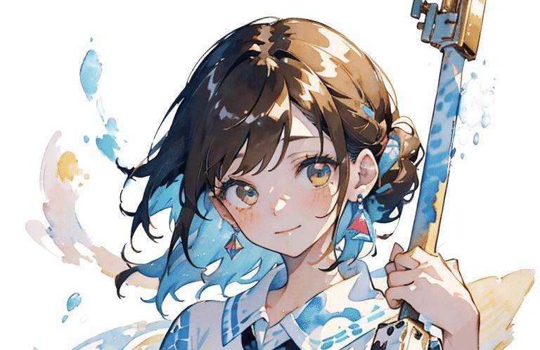
SeaArtで初心者がゆるっとイラストを生成する3ステップ
初心者のうちは高いゴールを設定せず、
ゆるゆる始めた手順を紹介します。
①ギャラリーの「リミックス機能」でプロンプトやモデルをチェック
まずはツールに慣れるため、真似から開始。
公開されてるイラストを選んで、そのまま生成する「リミックス」機能で感覚を掴みます。
このスモールステップを踏んだことで、
自分でもイラストができたぞ！
というモチベーションアップに繋がりました。
リミックスの手順はこちらに書いてます▼
https://note.com/alive_sheep6563/n/n1d095e22ae29
②プロンプトの3要素を書き換えて自分流にアレンジ
リミックスに慣れたら、プロンプトを少しだけ書き換えてみます。
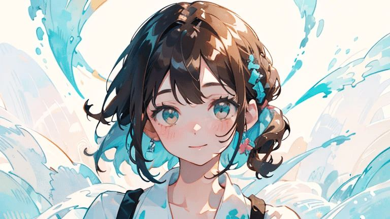
① 色（青系、暖色系など）
② モチーフ（花、女の子、風景など）
③ 世界観（幻想的、現実的など）
などを変えるだけで、イラストがガラリと変わるのがおもしろいですね。
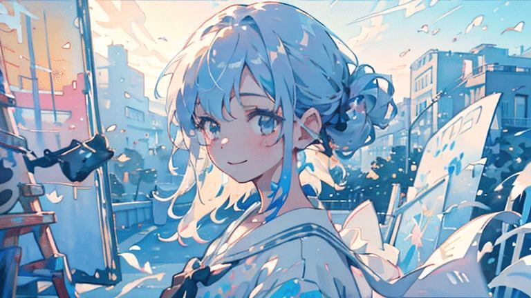
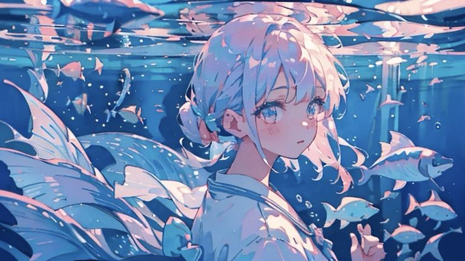
こうして好みに近づくのが楽しいと感じたのもこの頃です。
③モデルとLoRAを組み合わせて好みの画風を見つける
さらに慣れてきたら、以下の調整を行うようになりました。
CHECK POINT
ベースとなるモデルの変更
LoRA
特定のタッチを追加するデータの活用
絵の質感を調整できるようになり、表現の幅がぐっと広がりました。
ただ独学でずっとやってたので、ここまでたどり着くのに2ヶ月以上かかってます…
なので今まさに勉強させていただいてる、
先輩方の記事をいくつか紹介しますね。
まずはあかりさん！まさに第一歩目の記事！
各機能の解説が分かりやすいです▼
https://note.com/akari_seaart/n/na4d4cecd15be
こあらさんの記事も最近よく見に行きます▼
ベースモデルの変更方法
https://note.com/aibento/n/nbd07c741b1d0
LoRAの変更方法
https://note.com/aibento/n/n7fef9f3a7ec5
プロンプト構成
https://note.com/aibento/n/nf22941fa19aa?magazine_key=m37014c5b40d8
プロンプト構成は特に勉強中なので、目から鱗な記事でした！もっと早く見るべきだった…
noteじゃないけど高級設定はじめ、詳細がとにかく全部盛り。困ったら見に行きます▼
https://ai-illust-kouryaku.com/archives/3058#toc10
AIイラスト副業・note利用で避けるべき2つのリスク
ここが今回、私が一番お伝えしたい部分です。知らずに始めると、せっかくの積み上げが台無しになりかねません。
①「モデル別規約」で商用利用のトラブル防止
SeaArtの場合、モデルやLoRAごとに規約は異なります。
特にキャラクター系は避けるのが無難。
販売用には商用利用OKなモデルを選ぶことの重要性を学びました。
現在はモデルを選ぶとき、必ず商用利用の確認を徹底してます。
規約の確認方法と赤っ恥な失敗談も
併せてどうぞ！▼
https://note.com/alive_sheep6563/n/n1d095e22ae29
② 「自作発言」と誤解されない発信マナーと信頼構築
他の方のモデルの組み合わせやプロンプトを参考にしたら、引用元を明記すること。
実は過去にこの引用元を明記しなかったという大失敗をやらかしてます…
https://note.com/alive_sheep6563/n/necf25137a449
後から気づいて急いで記事を修正し、謝罪の記事も投稿。
ほんとダメだったなーと反省しました💦
またAI生成であることを隠さず発信すること。
noteもXも#AIイラストのハッシュタグを付けて投稿するようにしました。
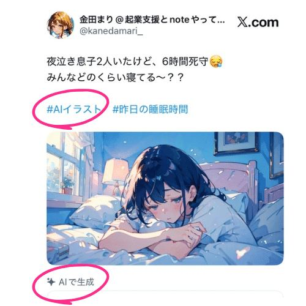
特にX(旧:Twitter)では、画像に「AI生成」を明示する機能がスタートしたのも注目ですね。
まり流・権利チェックフロー
1. 画像に「AI生成」を明記
（ハッシュタグ活用）
2. 参考作品があるときは記事内にリンク
3. 投稿前に「他人の権利を侵害してないか」
を確認
失敗した直後は本当に落ち込みましたが、
謝罪と修正を誠実に行うことは何より大切。
ちなみにブランディング効果を高めるテクについては、この記事で深掘りして語ってます▼
https://note.com/alive_sheep6563/n/na20ba1411496
この記事はやらかしの後に販売を始めました。
それでも記事を購入いただけるほど私を信頼してもらえたのは、失敗後に規約とマナーを守ろうと行動したからかもしれない。
AIイラストを使って
発信の独自性を高めたい・副業の幅を広げたい
と考えていたら。
規約の理解と発信への誠実さも
あなたの資産になる
と伝えたいです。
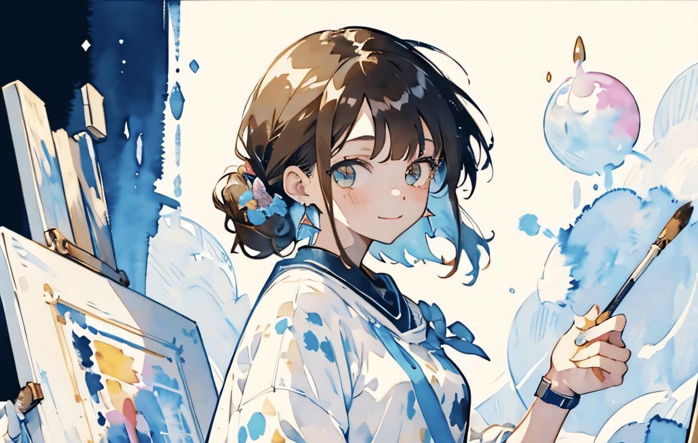
無課金でも道は開ける
1ヶ月でわかったのは、技術以上に
規約と発信への誠実さがまず大切ということ。
もしあなたが迷っていたら、
気になるイラストの
「創作(リミックス)」ボタンを試してみる
ことからスタートしてみて欲しいです。
SeaArtブラウザ版はこちら▼
次回は反響の大きかった
ボタニカル×水彩画イラスト生成の手順について、3月22日(日)朝に投稿予定です。
https://note.com/alive_sheep6563/n/n9f9140a1c38e
現時点で無料&商用利用OK！
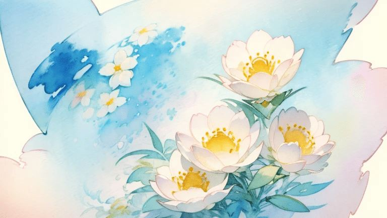
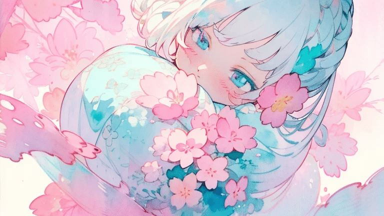
・モデルの組み合わせや調整値
・実際に使ったプロンプト
なども期間限定で無料公開します！
ぜひAIイラストの楽しさを体感してくださいね☺️💕
スケジュールとしては、
22〜24日→完全無料
25〜29日→リポスト無料
30日以降〜有料
という予定です。
まだ私をフォローしてない方は、
フォローでお見逃しなく。
公開しました！お気軽に見に来てくださいね！
https://note.com/alive_sheep6563/n/nb3b7f2d5c2c7
既にフォロー頂いてる皆様、いつも支えていただきとにかく感謝です。
三連休、楽しく過ごしてくださいね！
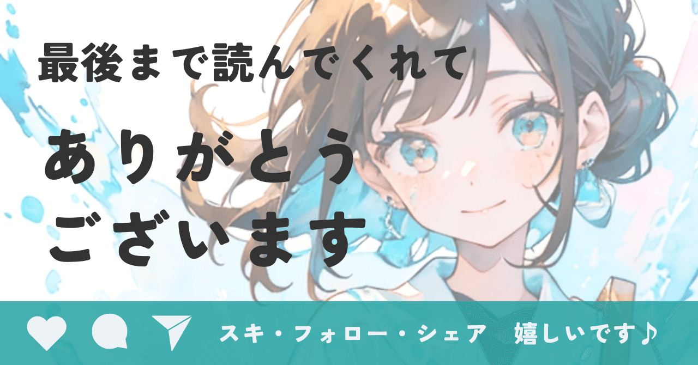